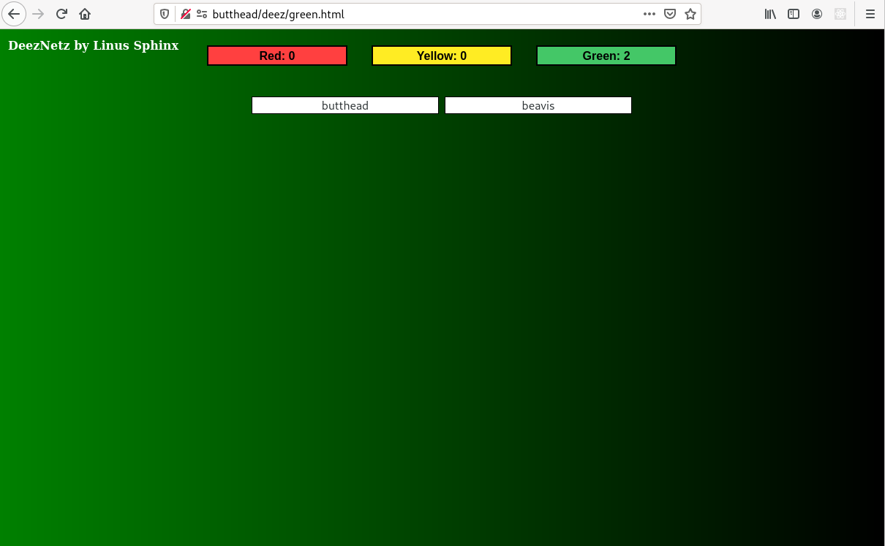

After everyone threw out their PERL scripted homegrown solutions from the 90's and put their faith and trust in fancy third party commercial products that subsequently got compromised and became, 'Poison Well', security attacks invited in by System Administrators with little programming knowledge who just couldn't see inside the compiled updates without the source to know if they were being hacked or not I started thinking about, 'the pingofdeath.pl', I wrote and used to monitor The Money Store Nationwide network back in the day and that maybe someone should take a big step back and write a similar simple solution using this decades more popular and secure tools with a fancier interface. A tool for SysAdmin by SysAdmin. Some easily configured and expanded scripts able to be edited separately for each client and yet more scalable to handle the bigger clouds of today. DeezNetz is the result. Anyone with basic Python/JavaScript/XML/XSLT/Linux skills can modify and expand the client side mechanism for generic and custom services developed in house to see exactly what it's doing and how, able to run CRC checks to know if it's been modified etc. I made getting started as simple as I could too. You write a deezhosts file of hostnames to monitor, run deezcrawl.py on each that writes an XML file of every port in etc/services listening, drills into every web service and adds the URL to check for a, "200", response, mkdir /usr/share/deez and copy checkDeez.py and it's packed.xsl for formatting messages. Build a web server to monitor from and fire off sweepDeez.py to collect stats and write the web pages to /var/www/html/deez. Adding Logstash, Kibana or Grafana for extra fancy graphing would be optiona and good exercise, customization of the display to suit the scale and type of your networks should be a snap. If your net fits in one page don't use two and cut down on your SysAdmin's clicking. The perfect network monitor in my belief should have an either red or green view, is it all good or bad, then drill down to find what's bad but Deez Netz doesn't force that on anyone. SMS or emailing of alerts or status is optional should be just icing on the cake. The emphasis here is on the framework to give every a place to start and learn about programming network protocols in Python, more powerful Javascript and hopefully illustrate and bring back the popularity of XSLT and illustrate why you should be using the power of XML over lame JSON or weak YAML.
Systemd Units
The machine behind the curtain making DeezNetz work is the new next generation inetd/xinetd replacement systemd. I was studying how it worked for service/socket/timer management in Redhat and realized I could use anything to write an httpd service as long as I obeyed a few rules and output the expected header lines. The script on every client monitored is, checkDeez.py and it fakes it as an HTTP web service. You can test and sample the state of anyone with any browser. It only knows three commands however: a simple are you ok message of RED, YELLOW or GREEN is returned from http://hostname:8142/OK, only what's wrong is returned by http://hostname:8142/ERR and the state of everything it's monitoring is returned by http://hostname:8142/FULL. The script that sweeps the network and builds the web interface files, index.html/red.html/yellow.html/green.html, is sweepDeez.py. The Javascript in them calls checkDeez.py service and displays the summaries. The index.html in action looks like this:
Note the green background and numbers on the buttons, it would change to yellow if there were one or more condition yellow hosts and red if there was one or more hosts completely out of touch. Green is all services and hosts accounted for, yellow is host responding to sweepDeez.py and reporting a monitored URL not responding with a, "200", response code or a monitored port not responding at all. DeezNetz sees into web applications and checks all links are valid. Drilling down into the buttons gives a summary page, in this case green:
Clicking on my moniker takes you back to the index, clicking on the top summary buttons takes you to those color condition list pages. The white button for each host in this condition will bring up a summary window sslike so, for green it is everything that is being monitored.
Scroll a bit and you'll see it monitors not only web application URL's but all mounted disk usage levels and available memory too.
Here I'll turn off tomcat on butthead and run sweepDeez.py on our central monitor web server. He is the server and client both, note sweepDeez.py connects on port 8142 and that runs the client service checkDeez.py, I do not touch it.
Clicking the yellow button brings up the list of hosts in condition yellow.
Clicking on a white hostname button in condition yellow issues an ERR command and returns just the issues that's put it in this list along with the disk levels and memory usage. In this case it's showing us I turned off Apache Tomcat which is mis-labeled in /etc/services as, "webcache". If I was in production I'd correct that so it would show the proper name of what was broken.
That's pretty much it for operation, the RED page just tries to do an OK command and you'll run out of sockets after too many retries, so reboot it or fix the network instead, something seriously wrong there. There are two more scripts, one that installs the service, socket and a line in /etc/services for you, deezyall.py and another that installs the timer unit to run sweepDeez.py periodically and update the web pages on the central monitor server. only deezyall.py should be run on the clients. The service unit file is /lib/systemd/system/deeznetz@.service.
Description=DeezNetz Network Monitor
Requires=deeznetz.socket
After=network.target deeznetz.socket
[Service]
Type=oneshot
ExecStart=-/usr/share/deez/checkDeez.py
StandardInput=socket
NonBlocking=true
[Install]
WantedBy=multi-user.target
and a /lib/systemd/system/deeznetz.socket of
[Unit]
Description=DeezNetz Network Monitor Socket
PartOf=deeznetz@.service
[Socket]
ListenStream=8142
BindIPv6Only=both
Accept=Yes
[Install]
WantedBy=multi-user.target
Enable/Start/Stop them with the, 'systemctl', command as the root user. The /lib/systemd/system/sweepDeez.service unit to scan hosts contains:
[Unit]
Description=DeezNetz Sweep Service
Wants=sweepDeez.timer
[Service]
Type=oneshot
ExecStart=-/usr/share/deez/sweepDeez.py
[Install]
WantedBy=multi-user.target
and a corresponding /lib/systemd/system/sweepDeez.timer file. The OnCalendar line controls how often you want it to run, this sample shows it running every 5 minutes, you'll probably want to relax that quite a bit.
[Unit]
Description=DeezNetz Sweep Timer
Requires=sweepDeez.service
[Timer]
Unit=sweepDeez.service
OnCalendar​=*:0/5:0
[Install]
WantedBy=timers.target
All files and source, quick and dirty up and running client/server build instructions and the project are located at DeezNetz on Github
SECURITY ALERT: At the bottom of checkDeez.py there is a line you must change to your domain to protect against cross domain scripting attacks see links below on CORS and the header, change the, '*', to your proper domain.
See: Forbidden header name Access-Control-Allow-Origin for details.
sys.stdout.write("Access-Control-Allow-Origin: *\r\n");
As always RFC, looking for any volunteers with a few thousand hosts to test on. Hope you find this useful in any capacity.
Linus Sphinx